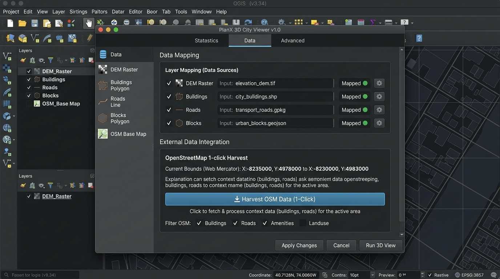
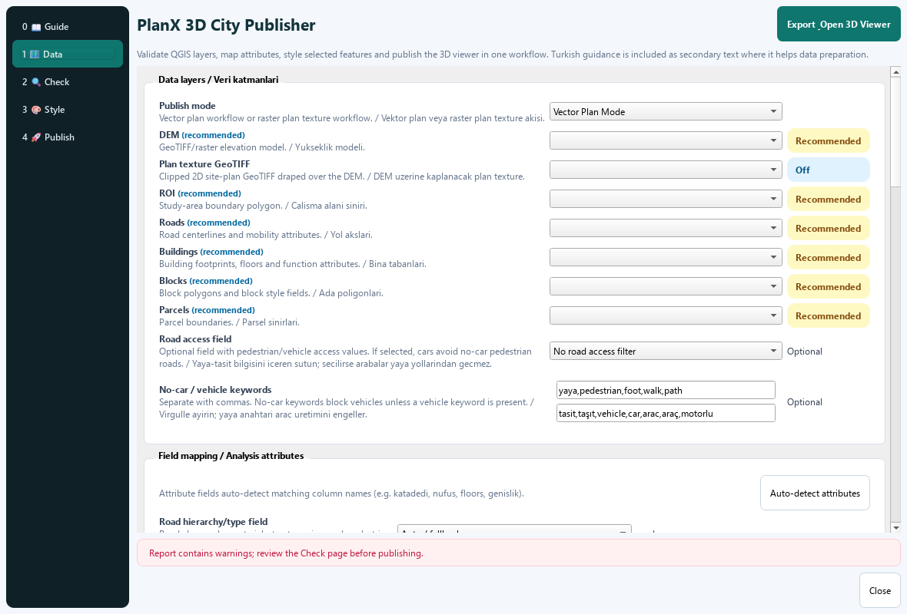
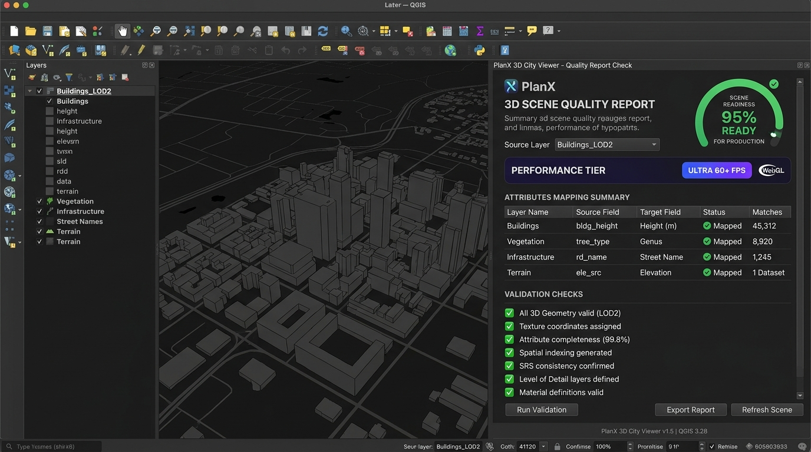
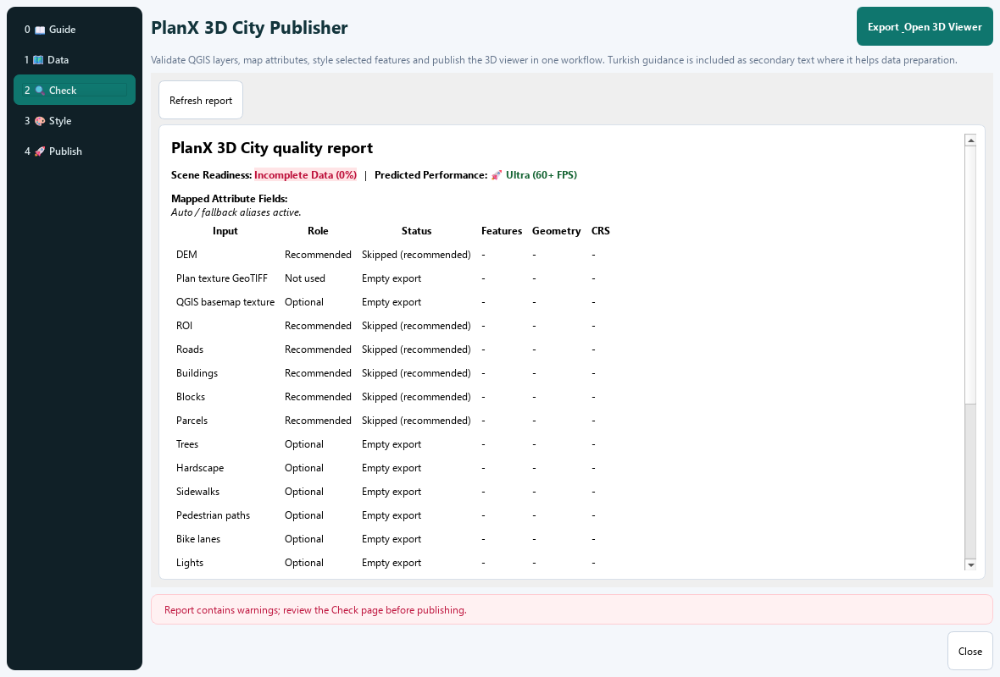
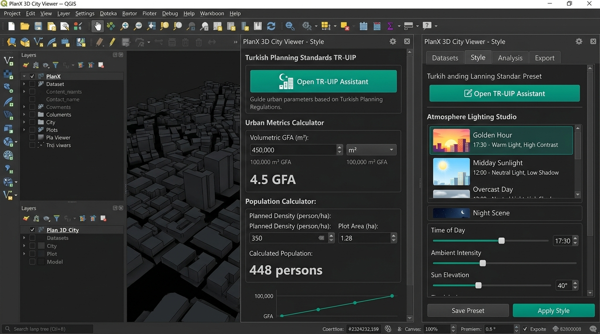
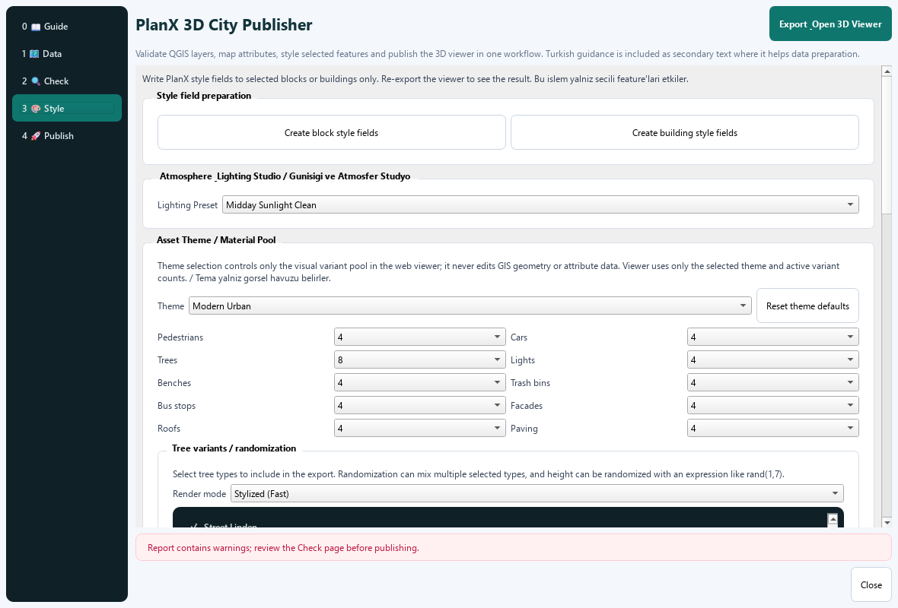
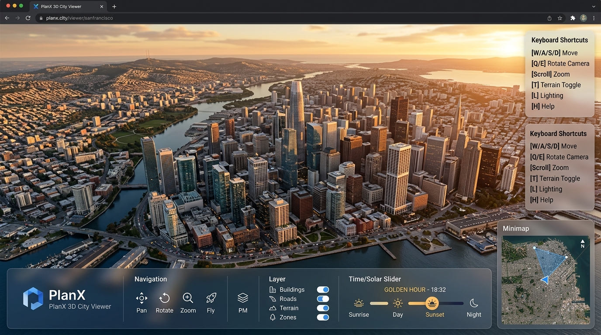
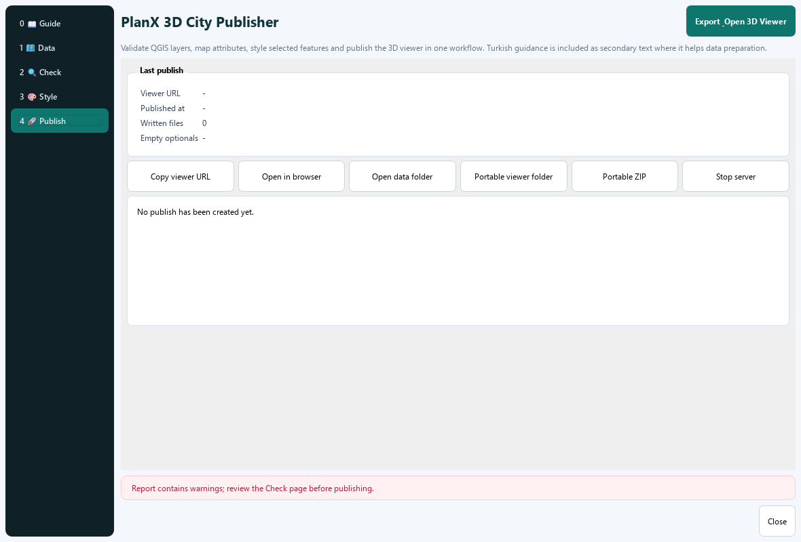

PlanX 3D City Viewer
Comprehensive Academic Reference Manual · v1.0.0 Flagship Edition
Yusuf Eminoğlu · August 2026 · github.com/YusufEminoglu/planx_3d_city
🚀 Visual Step-by-Step Workflow Guide (v1.0 Flagship)
Transform your QGIS GIS layers into an interactive 3D web cockpit in 4 simple steps:
Step 1: Data Preparation & 1-Click OSM Harvester (1 Data Tab)
Select your DEM raster and vector layers (Buildings, Roads, Blocks, Parcels, Vegetation, Urban Furniture). Or click "Import from OpenStreetMap" to harvest a 10-layer urban dataset in 1 click, or "Try with sample data" for instant demo testing.

Above: illustrative concept. Below: the actual Data page.

Step 2: Readiness & WebGL Performance Audit (2 Check Tab)
Click "Generate quality report" to inspect your 0-100% Scene Readiness Score, automatic metric UTM CRS reprojection advice, and pre-flight WebGL Performance Tier Estimator (60+ FPS predictor) before exporting.

Above: illustrative concept. Below: the actual Check page (a report table, not a separate scoring window).

Step 3: TR-UIP Planning Standards & GFA Calculator (3 Style Tab)
Click "Apply TR-UIP Standard Styles" to auto-theme buildings by land-use function according to Turkish Spatial Planning Regulations (Mekânsal Planlar Yapım Yönetmeliği: Konut, Ticaret, Karma, Sanayi, Park, Eğitim, Sağlık, İbadet, Resmi). Run "Volumetric GFA & Population Calculator" and choose visual Atmosphere Presets (Golden Hour, Midday, Night Glow, Morning Mist).

Above: illustrative concept. Below: the actual Style page.

Step 4: Interactive Web Cockpit & Portable Package (4 Publish Tab)
Click "Export and open 3D Viewer" to launch the browser cockpit. Press H for Keyboard Shortcuts HUD, W for Walk Mode, and P for Clean Presentation Mode. Export a self-contained portable ZIP for student handoff or jury review.

Above: illustrative concept. Below: the actual Publish page (pre-export state).

1. Architecture & Pipeline
Plugin Architecture & Data Pipeline
PlanX 3D City Viewer is a QGIS publisher plugin that bridges desktop GIS and browser-based 3D visualisation. The architecture has four layers:
- QGIS Dialog (
dialog.py) — Layer selection, mode switching, preset management, sample loading, and export triggering. The user picks which QGIS layers map to which 3D scene elements. - Export Engine (
exporter.py) — Converts QGIS vector layers to GeoJSON and raster layers to GeoTIFF/PNG, writing them into theweb/data/directory. Handles CRS reprojection, geometry validation, and DEM/plan-texture processing. - Local HTTP Server (
server.py) — A PythonThreadingTCPServeron127.0.0.1:8080–8099that serves theweb/directory with CORS headers. Includes aPOST /api/scene-stateendpoint for saving live viewer settings back to disk. - Three.js Web Viewer (
web/src/app.js) — A single-page application using Three.js with OrbitControls, PointerLockControls, Sky, EffectComposer (SSAO + UnrealBloomPass), CSS2DRenderer, and GLTFLoader. No build step, no Node.js dependency — works directly in any modern browser.
The pipeline is one-directional: QGIS layers → GeoJSON files → browser. The only reverse channel is the /api/scene-state save endpoint, which persists viewer settings (layer visibility, colors, asset selections, Model Studio models) so they survive export refreshes and portable ZIP freezing.
Theoretical Background: 3D City Modeling
Three-dimensional city modelling has evolved from simple geometric extrusions of building footprints to semantically rich, multi-resolution representations capable of supporting urban analysis, participatory planning, and digital twin applications. The theoretical foundation rests on two complementary paradigms: GIS-based 3D modelling, which emphasises geospatial accuracy, coordinate reference systems, and attribute linkage, and computer-graphics-based procedural modelling, which prioritises visual fidelity, real-time rendering, and interactive exploration.
The CityGML standard (Gröger & Plümer, 2012) formalised five Levels of Detail (LoD0–LoD4) ranging from 2.5D block models to architectural interior models. PlanX 3D City Viewer operates primarily at LoD2 (building footprints extruded with differentiated roof structures) with selected elements extending to LoD3 (facade textures and architectural detailing). However, unlike static CityGML datasets, the PlanX viewer employs a procedural hybrid approach: geometry is derived from GIS vector data at export time, but appearance (textures, colours, asset placement) is generated procedurally in the browser using a parameterised rule system inspired by the CGA Shape grammar formalised by Müller et al. (2006).
The conceptual contribution of this architecture is the publisher-subscriber model adapted to 3D geovisualisation. Rather than requiring the end user to operate GIS software, the QGIS user (the "publisher") exports a self-contained scene that any stakeholder (the "subscriber") can explore in a standard web browser. This model recognises the asymmetric distribution of GIS expertise in multidisciplinary planning teams documented by Biljecki et al. (2015) in their comprehensive review of 3D city model applications.
Web-based 3D geovisualisation gained traction with the advent of WebGL (Marrin, 2011), which provides hardware-accelerated 3D rendering in browsers without plugins. The Three.js library (Cabello, 2010) abstracts WebGL's low-level shader programming into a scene-graph API, enabling researchers and practitioners to build sophisticated 3D geospatial applications with manageable development effort. The PlanX viewer leverages this ecosystem by combining Three.js's rendering capabilities with geospatial data formats (GeoJSON, GeoTIFF) that maintain the spatial accuracy guarantees of the source GIS.
Mathematical Formulation: Export Pipeline
The export pipeline performs a coordinate transformation from the QGIS project CRS to a local scene coordinate system. Let \(\mathbf{p}_{\text{gis}} = (x_{\text{gis}}, y_{\text{gis}}, z_{\text{gis}})\) be a point in the projected CRS. The scene origin \(\mathbf{o}\) is defined as the centroid of the region of interest (ROI):
$$\mathbf{o} = \left( \frac{x_{\min} + x_{\max}}{2}, \frac{y_{\min} + y_{\max}}{2}, 0 \right) \tag{1}$$Each vertex is then translated to local coordinates:
$$\mathbf{p}_{\text{local}} = \mathbf{p}_{\text{gis}} - \mathbf{o} \tag{2}$$For the DEM raster, elevation values \(h(i,j)\) at pixel coordinates \((i,j)\) are sampled directly as the \(z\)-component:
$$z_{\text{terrain}}(x,y) = h\!\left( \left\lfloor \frac{x - x_{\min}}{\Delta x} \right\rfloor, \left\lfloor \frac{y - y_{\min}}{\Delta y} \right\rfloor \right) \tag{3}$$where \(\Delta x\) and \(\Delta y\) are the DEM pixel resolutions in map units. The GeoJSON export uses QgsVectorFileWriter with the RFC7946 (WGS84) option disabled, preserving projected coordinates for direct use in the Three.js scene. The georeferencing metadata (origin, CRS, bounding box) is written to manifest.json for the viewer to reconstruct the spatial context.
Building height is computed as:
$$H_{\text{building}} = n_{\text{floors}} \times h_{\text{floor}} \tag{4}$$where \(n_{\text{floors}}\) is read from the floor_count attribute field and \(h_{\text{floor}}\) is the user-configurable floor height (default 3.0 m). The extruded geometry is generated in the browser by the Three.js ExtrudeGeometry with the footprint polygon as the base shape and \(H_{\text{building}}\) as the extrusion depth.
Vector Plan vs Raster Plan Texture Modes
The plugin supports two export modes, selected in the dialog:
| Mode | Required Layers | Behaviour |
|---|---|---|
Vector Plan (vector) | DEM, ROI, Roads, Buildings, Blocks, Parcels | All 3D geometry is built from vector GeoJSON in the browser. Buildings are extruded polygons with procedural roofs. Terrain is a DEM-sampled mesh. Roads, blocks, and parcels are flat or draped polygon meshes. |
Raster Plan Texture (raster_texture) | ROI, Plan Texture (GeoTIFF), Roads, Buildings | The plan-texture GeoTIFF is draped over the DEM as a CanvasTexture. Buildings are still extruded from vector GeoJSON but seated on the textured terrain. Useful when a rendered master plan or orthophoto should appear as the ground surface. |
Local HTTP Server
The server binds to 127.0.0.1 (localhost only — not accessible from other machines) on the first free port between 8080 and 8099. It serves the web/ directory as static files with CORS headers. The viewer URL is http://127.0.0.1:{port}/src/. The server runs in a daemon thread and is stopped when the plugin is unloaded or the user clicks Stop Server in the dialog.
POST /api/scene-state request writes web/data/planx_scene_state.json. This file is included in portable exports, so the recipient sees the same camera angle, layer visibility, asset selections, and Model Studio models as the sender.Interpretation Guide: Architecture
Workflow decision tree. Choose Vector Plan mode when you have complete GIS vector data (buildings, roads, blocks, parcels) and want maximum parametric control in the viewer. Choose Raster Plan Texture mode when you have a rendered master plan or orthophoto that should serve as the ground surface — this is typical when working with architectural competition entries or urban design proposals exported from CAD/BIM software as georeferenced images.
Performance considerations. The local server architecture means all data loading is limited by disk I/O, not network bandwidth. For large projects (1000+ buildings, DEM at < 1 m resolution), the initial load time is dominated by GeoJSON parsing and terrain mesh generation in the browser. The server's threading model handles concurrent requests for GeoJSON and texture files efficiently. The server port range (8080–8099) provides 20 candidate ports, tolerating environments where several are already in use.
Headless integration. The ParcelFluxCore-style architecture (standalone engine with no ProcessingProvider dependency) means the exporter can be invoked from external scripts or batch processes. The /api/scene-state endpoint's 256 MB payload limit accommodates detailed GLB landmark models. For deployment scenarios where a persistent server is undesirable, the Portable Export feature (§9) produces a fully static website.
Step-by-Step Visual Workflow Guide (v1.0 Flagship)
Follow these 4 simple steps to transform your QGIS GIS layers into an interactive 3D web cockpit:
Step 1: Data Preparation & Auto-Matching (1 Data Tab)
Select your DEM raster and vector layers (Buildings, Roads, Blocks, Parcels, Vegetation, Urban Furniture). Or click "Import from OpenStreetMap" to harvest a 10-layer urban dataset in 1 click.
Step 2: Verification & Performance Audit (2 Check Tab)
Click "Generate quality report" to review your 0-100% Scene Readiness Score and pre-flight WebGL Performance Tier Estimator (60+ FPS predictor).
Step 3: Turkish Planning Standards (TR-UIP) & Atmosphere Styling (3 Style Tab)
Click "Apply TR-UIP Standard Styles" to auto-theme buildings by land-use function, run "Volumetric GFA & Population Calculator", and choose an Atmosphere Preset (Golden Hour, Midday, Overcast, Night Glow, Morning Mist).
Step 4: Interactive Web Cockpit & Portable Package (4 Publish Tab)
Click "Export and open 3D Viewer" to launch the browser cockpit. Press H for Keyboard Shortcuts, W for Walk Mode, and P for Clean Presentation Mode.
2. Input Data Requirements
Required & Recommended Inputs
| Layer Key | Geometry | Vector Plan | Raster Texture | Purpose |
|---|---|---|---|---|
dem | Raster (GeoTIFF) | Recommended | — | Digital Elevation Model. Sampled into a terrain mesh. Without a DEM, terrain is flat at elevation 0. |
roi | Polygon | Recommended | Required | Region of Interest — clips the terrain, defines the scene bounds. |
roads | Line | Recommended | Required | Road centre-lines. Extruded to flat ribbons with configurable width. |
buildings | Polygon | Recommended | Required | Building footprints. Extruded by floor_count × FLOOR_HEIGHT. Roof type per roof_shape field. |
blocks | Polygon | Recommended | — | City blocks. Used for the island-plateau surface and block-level statistics. |
parcels | Polygon | Recommended | — | Cadastral parcels. Rendered as optional boundary lines with configurable colour and opacity. |
plan_texture | Raster (GeoTIFF) | — | Required | Raster plan or orthophoto draped as a terrain texture. Placed by its own projected bounding box. |
basemap | Raster (GeoTIFF/PNG) | Optional | Optional | QGIS-exported basemap image. When enabled, it replaces the procedural terrain colour. |
Theoretical Background: Geospatial Data for 3D
The quality and semantic richness of input data fundamentally determine the utility of any 3D city model. Döllner & Buchholz (2005) established the concept of continuous levels of quality (CLOQ), arguing that 3D city models must accommodate heterogeneous data sources — from coarse block models derived from cadastral maps to architecturally detailed BIM-derived models. The PlanX viewer operationalises this by accepting layers at any level of detail: a building layer with only footprints (no attributes) produces a LoD1 block model, while one with floor_count, roof_shape, and function fields enables LoD2 visualisation with semantic colouring.
The DEM as foundational layer concept is grounded in the work of Hutchinson (1989) on digital terrain modelling. The DEM provides the vertical datum upon which all other layers are registered. In flat terrain (elevation range < 1 m), the DEM is optional and the viewer defaults to a horizontal plane at \(z = 0\). In undulating terrain, the DEM becomes essential for realistic building placement — buildings without terrain-following appear to float or sink, breaking the visual plausibility that Parish & Müller (2001) identified as critical for procedural city models.
The ROI polygon serves a dual purpose derived from computational geometry: it acts as both a clipping mask for the terrain mesh (reducing vertex count by excluding irrelevant areas) and a spatial reference for centring the scene. Without an ROI, the viewer must either render the entire DEM extent (wasteful) or guess the study area from building extents (fragile).
The distinction between required and recommended layers reflects the plugin's progressive enhancement philosophy. At minimum, a single building layer with a ROI polygon produces a usable 3D scene. Each additional layer — roads, blocks, parcels, trees, street furniture — enriches the scene incrementally. This design follows the graceful degradation pattern common in web applications: missing layers are silently omitted rather than causing export failure.
Optional Urban Furniture & Detail Layers
| Layer Key | Geometry | 3D Representation |
|---|---|---|
trees | Point | Procedural tree models (8 species variants, configurable density). |
hardscape | Polygon | Paved surfaces (plazas, parking). Draped on terrain with configurable texture and height offset. |
sidewalks | Polygon | Sidewalk polygons elevated slightly above roads. |
pedestrian_paths | Line/Polygon | Inner-block walkways for pedestrian movement. |
bike_lanes | Line/Polygon | Bicycle lane markings on roads. |
lights | Point | Street lamps (5 style variants, configurable density). |
benches | Point | Public benches (5 style variants). |
trashbins | Point | Waste bins (5 style variants). |
busstops | Point | Bus stop shelters (5 style variants). |
fences | Polygon | Fence/wall lines extruded as thin barriers. |
waterlines | Line | Water features rendered as blue ribbons. |
mosques | Point | Mosque markers with minaret indicators. |
tumulus | Point | Archaeological mound markers. |
Attribute Field Requirements
| Layer | Field | Type | Required | Description |
|---|---|---|---|---|
| Buildings | floor_count | Integer | Recommended | Number of storeys. Defaults to 1 if absent. |
| Buildings | roof_shape | String | Optional | One of: flat, gable, hip, shed, dome. Defaults to flat. |
| Buildings | function | String | Optional | Land-use category for function-based colouring and facade assignment. |
| Buildings | building_type | String | Optional | Building typology for the info panel click display. |
| Buildings | floors | Integer | Optional | Alias for floor_count. Checked if floor_count is absent. |
| Blocks | block_id / name | String | Optional | Block identifier for statistics grouping. |
| Trees | species | String | Optional | Tree species name. Maps to the 8 procedural tree variants. |
Interpretation Guide: Data Preparation
DEM acquisition. For urban-scale projects (1–10 km²), SRTM 1-arcsecond (≈30 m) or ALOS AW3D30 data is sufficient for contextual terrain. For site-scale projects (< 1 km²) where building-terrain interaction matters, use LiDAR-derived DEMs at 1–5 m resolution. The DEM quality setting in the viewer controls the mesh sampling density — higher quality produces smoother terrain at the cost of vertex count.
Building attribute enrichment. The most impactful data preparation step is populating the floor_count field. Without it, all buildings are single-storey, producing a visually misleading "suburban" appearance. For existing urban fabric, floor counts can be estimated from building height data (LiDAR nDSM / nDOM) divided by 3.0 m. For proposed developments, floor counts come from the zoning plan or architectural programme.
Roof shape assignment. The roof_shape field accepts five values. Flat roofs predominate in modern commercial and Mediterranean vernacular architecture. Gable roofs characterise Northern European and North American residential fabric. Hip roofs are common in suburban developments. Dome roofs are typical of religious and monumental structures. The procedural roof generator respects the actual building footprint (not an axis-aligned bounding box), so irregularly shaped buildings get plausible roof geometry.
Road network quality. Road centrelines should be topologically connected (intersecting at nodes) for the best visual result. Isolated segments render correctly but road junctions appear as gaps. The OSM Importer (§8) produces topologically connected road networks from OpenStreetMap data.
3. QGIS Dialog & Export Workflow
Dialog Layout & Tabs
The main dialog (PlanX3DCityDialog) organises the workflow into six panels:
| Panel | Function |
|---|---|
| 0 Guide | Bundled English HTML user guide with quick-start instructions, layer descriptions, and troubleshooting tips. Served directly from web/src/index.html content. |
| 1 Data | Layer mapping: a grid of QgsMapLayerComboBox widgets, one per input key. A mode selector (Vector Plan / Raster Plan Texture) toggles which inputs are shown as required. Save Preset and Load Preset buttons for reusing configurations across sessions. |
| 2 Publish | Export and launch controls. The Export & Launch button runs validate_inputs, writes all layers to web/data/, starts the local server, and opens the browser. Status bar, published-file summary, and empty-optional warnings. |
| 3 View | Viewer controls: Reopen Viewer, Stop Server. When the server is running, shows the local URL as a clickable link. |
| 4 Portable | Portable export: copy the entire web/ directory to a folder or ZIP archive for distribution. Optionally includes a planx_tour.json narrative tour file. |
| 5 Style | Building and block styling tools: apply floor_count, roof_shape, function, and block-level fields to selected features in QGIS before export. |
Export Process & File Contracts
When Export & Launch is clicked, the exporter:
- Validates that all required layers for the selected mode are assigned.
- Warns if existing data files would be overwritten.
- Writes each vector layer as GeoJSON to
web/data/{key}.geojsonusingQgsVectorFileWriter, reprojecting to the project CRS. - Writes raster layers: DEM and plan texture as GeoTIFF (
dem.tif,siteplan.tif); basemap as PNG (basemap.png) rendered from the QGIS map canvas at the project extent. - Starts the local server and opens the browser to
http://127.0.0.1:{port}/src/.
The web viewer reads web/data/manifest.json (auto-generated by the exporter) to discover which layers are available, then fetches each GeoJSON/GeoTIFF asynchronously.
Save & Load Presets
The Data panel's Save Preset button serialises the current layer selections (layer IDs) to a JSON file. Load Preset restores them. Presets are stored as .planx3d JSON files in the user's documents directory. This enables: (a) reusing a layer configuration across QGIS sessions without re-selecting each layer; (b) sharing a preset file with collaborators who have the same layers loaded; (c) switching between analysis scenarios (e.g. "existing conditions" vs "proposed development") by loading different presets.
Interpretation Guide: Dialog Workflow
First-run workflow. For a new project: (1) Load the Sample Dataset (§8) to verify the plugin works; (2) Replace sample layers with your data one at a time, re-exporting after each substitution to confirm compatibility; (3) Save a preset once all layers are correctly mapped; (4) Adjust viewer settings (sun angle, asset theme, layer visibility) and the scene state auto-saves, so subsequent exports remember your configuration.
Iterative design workflow. The intended usage pattern is: adjust QGIS layers → Export & Launch → inspect in browser → return to QGIS, edit attributes → re-export. The scene state preservation means you do not lose your viewer customisation when re-exporting with updated data. This supports the planning charette workflow common in urban design: rapid cycles of modification and visual review.
Preset strategy. Create separate presets for distinct scenarios: "existing_context" (only existing buildings, roads, DEM), "proposed_max" (all proposed buildings at maximum floor count), "proposed_min" (all proposed at minimum), "analysis" (all layers for comprehensive review). Loading a preset takes under a second versus several minutes of manual layer selection.
4. Web Viewer — Environment & Terrain
Camera Controls: Orbit, Walk & Minimap
The viewer provides three camera modes:
| Mode | Control | Implementation |
|---|---|---|
| Orbit (default) | Left-click + drag = orbit, scroll = zoom, right-click + drag = pan | OrbitControls with damping, min/max distance limits, and target centered on the ROI. |
| Walk (Mobility Mode) | WASD keys = move, mouse = look, Shift = run | PointerLockControls at eye height (1.7 m). Terrain-following: the camera climbs/descends with the DEM. Click to lock pointer, Esc to release. |
| Minimap | Toggle via GUI checkbox | A small top-down orthographic camera rendered to a corner overlay using a second WebGLRenderer scene. Shows the full ROI extent with a camera-frustum indicator. |
Mathematical Formulation: Camera & Projection
The orbit camera employs a spherical coordinate parameterisation around a target point \(\mathbf{t}\):
$$\mathbf{c}(\theta, \phi, r) = \mathbf{t} + r \begin{pmatrix} \sin\phi \cos\theta \\ \cos\phi \\ \sin\phi \sin\theta \end{pmatrix} \tag{5}$$where \(\theta \in [0, 2\pi)\) is the azimuthal angle, \(\phi \in [0, \pi]\) is the polar angle, and \(r\) is the radial distance. The view-projection matrix chain is:
$$\mathbf{V} = \text{lookAt}(\mathbf{c}, \mathbf{t}, \mathbf{u}_{\text{up}}), \quad \mathbf{P} = \text{perspective}(\text{fov}, \text{aspect}, z_{\text{near}}, z_{\text{far}}) \tag{6}$$For the orthographic minimap, the projection matrix is:
$$\mathbf{P}_{\text{ortho}} = \text{orthographic}(-\tfrac{w}{2}s, \tfrac{w}{2}s, -\tfrac{h}{2}s, \tfrac{h}{2}s, z_{\text{near}}, z_{\text{far}}) \tag{7}$$where \(s\) is a scale factor mapping world units to the minimap viewport. The walk mode camera height follows the terrain:
$$z_{\text{camera}}(x, y) = z_{\text{terrain}}(x, y) + h_{\text{eye}} \tag{8}$$with \(h_{\text{eye}} = 1.7\) m representing average human eye height. The camera's forward and right vectors are constrained to the horizontal plane to prevent disorienting roll during terrain traversal, with only the vertical component of the look direction responding to mouse pitch input.
The OrbitControls damping simulates angular momentum with exponential decay:
$$\omega_{t+\Delta t} = \omega_t \cdot e^{-\lambda \Delta t} \tag{9}$$where \(\lambda\) is the damping coefficient. This produces the physically intuitive behaviour where a quick drag "throws" the view and it gradually decelerates.
Environment: Sky, Sun, Fog & Weather
| Control | Default | Description |
|---|---|---|
| Sun Direction | 0° (north) | Azimuth angle of the directional light. 0–360°. |
| Sun Elevation | 45° | Altitude angle above the horizon. 0 = sunset, 90 = noon. Affects shadow length and sky colour. |
| Fog | Enabled, density 0.00015 | Exponential fog matching the sky colour. Toggle and density slider. |
| Weather | Clear | Dropdown: Clear, Cloudy (dimmer sun, whiter sky), Overcast (flat grey light), Rain (dark sky, particle effect). |
| Solar Animation (⏱) | Off | Auto-rotates sun direction at configurable speed (hours/second). Creates a day-cycle timelapse effect. |
Mathematical Formulation: Sky & Solar Model
The sky is rendered using Three.js's Sky shader, which implements the Preetham et al. (1999) analytical sky model. The spectral radiance \(L(\lambda, \theta, \gamma)\) at wavelength \(\lambda\), view zenith \(\theta\), and scattering angle \(\gamma\) is:
The solar position is parameterised by azimuth \(\alpha_s\) and elevation \(\varepsilon_s\). The directional light vector is:
$$\mathbf{l}_{\text{sun}} = \begin{pmatrix} -\sin\alpha_s \cos\varepsilon_s \\ \sin\varepsilon_s \\ -\cos\alpha_s \cos\varepsilon_s \end{pmatrix} \tag{11}$$The solar animation advances the sun hour-angle \(\tau(t) = \tau_0 + \omega_{\text{speed}} \cdot t\), where \(\omega_{\text{speed}}\) is the user-configurable speed in hours per second. The full sun position is computed from:
$$\sin\varepsilon_s = \sin\phi_{\text{lat}}\sin\delta + \cos\phi_{\text{lat}}\cos\delta\cos\tau \tag{12}$$ $$\tan\alpha_s = \frac{\sin\tau}{\sin\phi_{\text{lat}}\cos\tau - \cos\phi_{\text{lat}}\tan\delta} \tag{13}$$where \(\phi_{\text{lat}}\) is the site latitude and \(\delta\) is the solar declination computed from the day of year. Fog attenuation follows the exponential model:
$$C_{\text{fog}}(d) = 1 - e^{-\rho \cdot d} \tag{14}$$where \(\rho\) is the fog density parameter and \(d\) is the fragment's eye-space distance. The fog colour is set to the sky colour at the horizon, producing a seamless blend between distant geometry and sky.
Terrain: DEM, Island Plateau & Basemap
| Control | Default | Description |
|---|---|---|
| Island Plateau | On | Raises block polygons to match the DEM surface, creating a flat "island" at the median elevation of each block's footprint. Eliminates z-fighting between buildings and terrain within blocks. Toggle off to show raw DEM under buildings. |
| Outside ROI Terrain | On | When enabled, the DEM mesh extends beyond the ROI polygon (useful for context). When disabled, the terrain is clipped to the ROI for a clean model-only view. |
| Basemap Texture | Off | When enabled and a basemap.png exists, replaces the procedural terrain colour with the QGIS-exported basemap image. Takes precedence over procedural colour. |
| Pavement | Asphalt texture | The procedural ground texture outside blocks. Configurable via the asset theme's paving selection. |
Mathematical Formulation: Terrain Mesh Generation
The terrain mesh is generated from the DEM GeoTIFF as a regular grid of vertices. Given a DEM of dimensions \(W \times H\) pixels covering a spatial extent \([x_{\min}, x_{\max}] \times [y_{\min}, y_{\max}]\), the vertex at grid position \((i,j)\) is:
$$\mathbf{v}_{i,j} = \left( x_{\min} + i \cdot \Delta x,\; z_{\text{DEM}}(i,j) \cdot s_z,\; y_{\min} + j \cdot \Delta y \right) \tag{15}$$where \(\Delta x = (x_{\max} - x_{\min}) / (W-1)\), \(\Delta y = (y_{\max} - y_{\min}) / (H-1)\), and \(s_z\) is a user-configurable vertical exaggeration factor. The mesh quality parameter controls a subsampling factor \(k \in \{1, 2, 4, 8\}\) such that every \(k\)-th pixel is sampled, reducing vertex count from \(W \times H\) to approximately \((W/k) \times (H/k)\).
Each grid cell yields two triangles with vertices \((\mathbf{v}_{i,j}, \mathbf{v}_{i+1,j}, \mathbf{v}_{i,j+1})\) and \((\mathbf{v}_{i+1,j}, \mathbf{v}_{i+1,j+1}, \mathbf{v}_{i,j+1})\). Per-vertex normals are computed via the cross product of the partial derivatives approximated by central differences:
$$\mathbf{n}_{i,j} = \frac{\partial\mathbf{v}}{\partial x} \times \frac{\partial\mathbf{v}}{\partial y} \approx \left( \mathbf{v}_{i+1,j} - \mathbf{v}_{i-1,j} \right) \times \left( \mathbf{v}_{i,j+1} - \mathbf{v}_{i,j-1} \right) \tag{16}$$The island plateau algorithm computes, for each block polygon \(B_k\), the median elevation of DEM samples falling within its footprint:
$$\bar{z}_k = \text{median}\{ z_{\text{DEM}}(x,y) \mid (x,y) \in B_k \} \tag{17}$$The plateau surface is then generated as a flat polygon extruded to \(z = \bar{z}_k\) with a configurable transition ramp width at the edges. This eliminates the z-fighting artefact that occurs when extruded buildings and the undulating DEM surface compete for the same depth-buffer pixels, a phenomenon well-documented in WebGL rendering of GIS-derived meshes (Croci et al., 2022).
The basemap texture is applied as a CanvasTexture mapped to the terrain mesh via planar UV coordinates:
When the basemap is disabled, the terrain uses a procedural material with configurable colour or tileable pavement texture, with UV coordinates scaled by a user-defined tile size to control repeating pattern frequency.
Interpretation Guide: Terrain & Environment
Island plateau strategy. Enable the island plateau when your DEM has significant local variation (slopes > 5%) and buildings have flat ground floors. The plateau creates a level building platform matching how real construction typically involves site grading. Disable it for hillside developments where buildings genuinely step with the terrain, or when analysing the visual impact of terrain on building height perception.
Shadow study workflow. Set the site latitude correctly (use the shadow study panel), then use the day-of-year slider to examine shadow patterns at the solstices and equinoxes. The solar animation at slow speed (1 hour/second) produces a comprehensible diurnal shadow cycle. For formal shadow analysis, export static views at hourly intervals. Note that the Three.js shadow mapping uses a single cascaded shadow map — shadow edges are softer than ray-traced equivalents and should be interpreted qualitatively rather than for precise solar-access compliance.
DEM resolution trade-off. Higher DEM resolution produces smoother terrain but increases vertex count quadratically: doubling resolution quadruples vertices. For a typical 2 km² site at 5 m resolution, the terrain mesh has approximately 160,000 vertices, which is comfortable on any modern GPU. At 1 m resolution, vertex count exceeds 4 million, potentially impacting frame rates on integrated graphics. Use the DEM quality slider to balance visual quality and performance.
Fog as depth cue. Exponential fog serves both aesthetic and functional purposes. Aesthetically, it provides atmospheric perspective, making distant buildings appear lighter — consistent with real-world aerial perspective. Functionally, it masks the far clipping plane, avoiding the harsh cut-off where geometry abruptly disappears. A density of 0.0001–0.0003 is appropriate for urban scenes; higher densities produce the "misty morning" effect useful for atmospheric presentations.
5. Web Viewer — Buildings & Surfaces
Buildings: Floors, Roofs, Facades & Function Colors
| Control | Default | Description |
|---|---|---|
| Floor Height | 3.0 m | Height per storey. Building height = floor_count × floor height. Slider: 2.5–5.0 m. |
| Roof Shape | flat | Dropdown: flat, gable, hip, shed, dome. Applied globally to all buildings unless per-building roof_shape field overrides it. |
| Roof Height | 1.5 m | Vertical rise of the roof above the top floor. For gable/hip roofs, this is the ridge height. |
| Roof Texture | Theme default | Texture applied to roof surfaces. Each asset theme provides 4–5 roof variants. |
| Function Colors | Off | When enabled, buildings are coloured by their function field using a categorical palette (residential = warm beige, commercial = blue-grey, industrial = grey, educational = yellow, health = red, religious = purple, etc.). |
| Function Facades | Off | When enabled, building walls use facade textures mapped to the function field. When disabled, a single facade texture (from the asset theme) is applied to all buildings. |
| Facade Texture Scale | 4.85× | Global scale multiplier for the facade texture UV coordinates. Adjust to make window and floor lines visually match the building's physical storey count. |
Roof geometry: Gable, shed, and hip roofs follow the real building footprint polygon and orientation (not an axis-aligned bounding box). The roof is centered on the footprint with a ≤0.30 m eave. Shed roofs close their raised sides. All roof and wall materials are double-sided to prevent invisible faces from certain camera angles.
Mathematical Formulation: Building Extrusion & Roofs
Building footprint polygons are extruded using Three.js ExtrudeGeometry. Given a footprint defined by an ordered sequence of vertices \(\{ (x_k, y_k) \}_{k=0}^{n-1}\) in the horizontal plane, the extrusion produces a polyhedral mesh with the following face decomposition: one bottom face (capped), \(n\) side faces (quads), and one top face. The side-face vertices are:
where \(H = n_{\text{floors}} \times h_{\text{floor}}\) from Equation 4.
Gable roof. The gable roof adds a triangular prism above the top face. Given the footprint's oriented bounding box (OBB) with principal axis direction \(\mathbf{d}_{\text{long}}\) and width \(w\) perpendicular to it, the ridge line runs along \(\mathbf{d}_{\text{long}}\) at the centroid. The ridge vertices are:
$$\mathbf{r}_k^{\text{ridge}} = \mathbf{c}_{\text{top}} \pm \frac{w_{\text{short}}}{2} \cdot \mathbf{d}_{\text{short}} \quad \text{at height } H + h_{\text{roof}} \tag{20}$$The gable faces are two triangular gable ends (perpendicular to \(\mathbf{d}_{\text{long}}\)) and two sloped rectangular faces.
Hip roof. The hip roof adds a ridge line offset inward from all four edges by the hip setback distance \(d_{\text{hip}} = \min(0.3, w_{\text{short}}/4)\). The roof surface consists of four trapezoidal faces meeting at the ridge.
Shed roof. The shed roof raises one edge of the top face to height \(H + h_{\text{roof}}\) while the opposite edge remains at \(H\). The raised edge is identified as the edge closest to the principal street (determined by proximity to road centrelines).
Dome roof. Approximated as a hemisphere or ellipsoidal cap above the top face centroid, with semi-axes \((w_{\text{short}}/2, h_{\text{roof}}, w_{\text{long}}/2)\).
Facade UV mapping. The UV coordinates for side faces map the horizontal dimension linearly along the building perimeter and the vertical dimension by storey:
$$u = \frac{\text{cumulative perimeter distance}}{\text{total perimeter}} \times s_{\text{facade}} \tag{21}$$ $$v = \frac{z}{h_{\text{floor}}} \times s_{\text{facade}} \tag{22}$$where \(s_{\text{facade}}\) is the facade texture scale parameter (default 4.85). Adjusting \(s_{\text{facade}}\) changes the apparent window/floor rhythm to visually match the building's storey count — a value too low produces oversized windows; too high produces unnaturally compressed facades. All materials are rendered with side: THREE.DoubleSide to ensure visibility from both interior and exterior camera positions.
Roads, Hardscape, Sidewalks & Parcels
| Control | Default | Description |
|---|---|---|
| Show Roads | On | Toggle road ribbon visibility. |
| Road Width | 10 m | Width of the extruded road ribbon. Slider: 3–30 m. |
| Road Color | Dark grey | Colour of the road surface. |
| Sidewalk Color | Light grey | Colour of the sidewalk polygons. |
| Show Sidewalks / Crosswalks / Pedestrian Paths | On | Independent toggles for each pedestrian surface type. |
| Show Hardscape | On | Toggle paved-surface visibility. Hardscape polygons are subdivided before terrain draping to reduce instability near island edges. |
| Hardscape Texture | Theme default | Texture applied to hardscape surfaces. |
| Hardscape Height | 0.05 m | Vertical offset above terrain. Prevents z-fighting with the ground mesh. |
| Show Parcels | Off | Toggle parcel boundary visibility. |
| Boundary Color / Opacity | White, 40% | Parcel line style. |
| Show Blocks | On | Toggle block polygon visibility. When transparency > 0, blocks are semi-transparent for reviewing the underlying DEM. |
Mathematical Formulation: Road & Surface Generation
Road centrelines are extruded as flat ribbon meshes. Given a polyline with vertices \(\{\mathbf{p}_i\}_{i=0}^{m-1}\) and a road width \(w_r\), the ribbon vertices for segment \(i\) are:
$$\mathbf{d}_i = \frac{\mathbf{p}_{i+1} - \mathbf{p}_i}{\|\mathbf{p}_{i+1} - \mathbf{p}_i\|}, \quad \mathbf{n}_i = \begin{pmatrix} -\mathbf{d}_i.z \\ 0 \\ \mathbf{d}_i.x \end{pmatrix} \tag{23}$$ $$\mathbf{v}_{i,L} = \mathbf{p}_i + \frac{w_r}{2} \mathbf{n}_i, \quad \mathbf{v}_{i,R} = \mathbf{p}_i - \frac{w_r}{2} \mathbf{n}_i \tag{24}$$At junctions, the ribbon geometry is joined at the shared vertex using mitered corners:
$$\mathbf{n}_{\text{miter}} = \frac{\mathbf{n}_{i-1} + \mathbf{n}_i}{\|\mathbf{n}_{i-1} + \mathbf{n}_i\|} \tag{25}$$with a miter limit to prevent spike artefacts at acute angles. Hardscape polygons are triangulated using constrained Delaunay triangulation via Three.js ShapeGeometry, then each vertex's \(z\)-coordinate is sampled from the DEM using Equation 3 with a configurable height offset (default 0.05 m) to prevent z-fighting.
Interpretation Guide: Buildings & Surfaces
Roof selection strategy. The global roof shape setting is the fallback; per-building roof_shape field values override it. For mixed-use areas, model the dominant roof type as the global default and tag exceptions (e.g. dome for mosques, gable for historic buildings) via the attribute field. The roof height parameter controls visual prominence — 1.5 m is appropriate for low-slope modern roofs; 3.0 m produces the steep pitches characteristic of Northern European vernacular.
Function-based colouring. Enable Function Colors when the building layer has a populated function field. The categorical palette is designed for urban-planning legibility: warm colours (residential) advance visually, cool colours (commercial/office) recede, and high-contrast colours (red for health, purple for religious) draw attention to civic landmarks. For presentation to non-technical stakeholders, function colours communicate land-use patterns more intuitively than uniform facades. For architectural review, disable function colours to assess building massing without the distraction of colour coding.
Facade scale calibration. The facade texture scale should be tuned so that one vertical repeat of the facade texture approximately equals one storey. With the default 4.85× and a typical facade texture containing 2–3 visible floor bands, each vertical texture repeat covers roughly 3 m — matching a single storey. If your facade textures have different proportions, adjust the scale accordingly. A building with 5 storeys should show approximately 5 horizontal window bands or 5 repeating texture units from ground to roof.
Road width realism. Real-world road widths vary by hierarchy: local residential streets 6–8 m, collectors 10–14 m, arterials 18–24 m. If your road network includes a highway or width attribute, use QGIS's field calculator to set road width per segment before export. The global road width slider then serves as a quick multiplier rather than a uniform override.
6. Web Viewer — Assets & Effects
Asset Themes: Furniture, Vehicles & Trees
The viewer ships with six curated asset themes, each providing a coherent visual style across all street furniture, vehicles, pedestrians, trees, facades, roofs, and paving:
| Theme | Character | Tree Palette | Facade Palette |
|---|---|---|---|
| Modern Urban | Contemporary global city | Linden, Plane, Maple, Columnar, Broadleaf, Pine, Olive, Cypress | UrbanA–E (glass, brick, panel, concrete, mixed) |
| Modern Turkish | Turkish urban fabric (40 facade textures, 4 families × 10 storey variants) | Plane, Linden, Maple, Columnar, Olive, Cypress, Jacaranda, Pine | Urban_TR_A–D (entrance/commercial ground floor + apartment upper floors) |
| Mediterranean | Southern European / coastal | Olive, Cypress, Plane, Palm, Jacaranda, Broadleaf, Maple, Linden | Stucco, UrbanB, UrbanD, CoastalWhite |
| Campus | University / institutional | Plane, Pine, Maple, Linden, Broadleaf, Columnar, Olive, Cypress | CampusGlass, UrbanC, UrbanA, UrbanB |
| Eco | Sustainable / green city | Broadleaf, Pine, Linden, Maple, Olive, Jacaranda, Cypress, Plane | EcoTimber, UrbanD, UrbanB, UrbanA |
| Dense Urban | High-density metropolitan | Columnar, Maple, Linden, Plane, Broadleaf, Pine, Olive, Cypress | DenseBrick, UrbanA, UrbanC, UrbanD |
Each theme also defines variants for pedestrians (4–5 styles), cars (5–6 colours), lights, benches, bins, and bus stops. The theme is selected in the viewer's GUI and persists in the scene state.
Street Furniture & Vegetation
| Control | Default | Description |
|---|---|---|
| Car Density | Medium (50%) | Density of procedural vehicles placed on road segments. Slider: 0–100%. |
| Traffic Speed | 0 (static) | Speed of animated vehicle movement along roads. 0 = parked cars only. |
| Pedestrian Density | Low (25%) | Density of procedural pedestrian models on sidewalks and paths. Slider: 0–100%. |
| Tree Density | As per layer | When tree points are loaded, this slider downsamples them for performance: 100% = all trees, 25% = every fourth tree. |
| Lights / Benches / Bins / Bus Stops | On | Independent toggles for each street-furniture category. Each category uses the active asset theme's style variants. |
Post-Processing Effects & Solar Animation
| Control | Default | Description |
|---|---|---|
| SSAO (Screen-Space Ambient Occlusion) | On, radius 0.5 | Adds contact shadows in crevices and building bases. Computed via SSAOPass in the EffectComposer pipeline. Noticeable performance impact on integrated GPUs — disable for smoother framerates. |
| Bloom (Unreal Bloom Pass) | Off | Adds a glow/bloom effect to bright surfaces. Useful for night scenes with lit windows. Threshold, strength, and radius configurable. |
| Solar Animation | Off | Auto-rotates the sun direction at a configurable speed (hours per second). Creates a day-cycle animation from dawn to dusk. The sky colour, shadow direction, and ambient light update continuously. |
Mathematical Formulation: SSAO & Post-Processing
Screen-Space Ambient Occlusion (SSAO) was introduced by Shanmugam & Arikan (2007) and refined through Horizon-Based Ambient Occlusion (HBAO) by Bavoil & Sainz (2008). The PlanX viewer uses the Three.js SSAOPass, which implements the following per-pixel obscurance integral:
where \(V(\mathbf{p}, \boldsymbol{\omega})\) is the visibility function (0 if occluded, 1 if visible) in direction \(\boldsymbol{\omega}\) from surface point \(\mathbf{p}\) with normal \(\mathbf{n}\). In screen space, this is approximated by sampling the depth buffer at \(K\) directions with \(N\) steps per direction:
$$A_{\text{SSAO}}(\mathbf{p}) \approx 1 - \frac{1}{K}\sum_{k=1}^{K} \frac{1}{N}\sum_{n=1}^{N} \mathbb{1}\!\left[ z_{\text{buffer}}(s_n) > z_{\text{world}}(s_n) \right] \cdot w(d_n) \tag{27}$$where the weight function \(w(d_n)\) attenuates occlusion with distance from the receiver point, typically using a falloff function:
$$w(d) = \max\!\left(0, 1 - \frac{d}{R}\right)^2 \tag{28}$$with occlusion radius \(R\). The result is a greyscale occlusion map multiplied with the rendered colour buffer. The performance cost scales with \(K \times N\) — higher quality settings increase the sample count at the expense of frame rate. Mattausch et al. (2010) demonstrated that temporal coherence can reduce effective sample counts, but the PlanX viewer's static-scene use case (urban visualisation without real-time geometry changes) means single-frame SSAO with modest sample counts provides acceptable quality.
UnrealBloomPass applies a luminance threshold and Gaussian blur cascade:
$$L_{\text{bloom}}(\mathbf{p}) = \max(0, L(\mathbf{p}) - \tau) * G_{\sigma_1} * G_{\sigma_2} * G_{\sigma_3} \tag{29}$$where \(\tau\) is the luminance threshold, \(*\) denotes convolution, and \(\{G_{\sigma_i}\}\) is a cascade of Gaussian kernels at increasing standard deviations. The bloom contribution is added to the original image with a user-controlled strength parameter.
Interpretation Guide: Assets & Effects
Asset theme selection. Choose the theme that matches your project's architectural and cultural context. The Modern Turkish theme is calibrated for Turkish urban morphology: apartment blocks with commercial ground floors, medium-rise (4–8 storeys), and specific tree species (plane, linden, jacaranda). For non-Turkish contexts, Modern Urban provides a neutral international palette. The theme system is extensible — adding a new theme requires populating the ASSET_THEME_PRESETS configuration object and providing the corresponding texture and model assets.
Performance-adaptive rendering. On discrete GPUs, SSAO at medium quality with bloom disabled typically runs at 30–60 fps for scenes with up to 500 buildings. For presentations on integrated graphics or older hardware: disable SSAO, set tree density to 50%, reduce car/pedestrian density to minimum, and use DEM quality "low." The viewer automatically uses InstancedMesh for repeated elements (trees, lights, benches) to minimise draw calls.
Night scene workflow. Enable bloom and set the sun elevation to −10° (below horizon) for a night-time presentation. The sky shader transitions to a dark palette, and bloom creates the visual impression of lit windows and street lights. This is particularly effective for urban design proposals where evening activation and street-level lighting quality are design considerations.
7. Web Viewer — Advanced Features
Narrative Keyframe Tours
The viewer supports narrative keyframe tours: a sequence of camera positions, each with an optional text caption, that the viewer animates through. Tours are defined in a planx_tour.json file placed in web/data/. Each keyframe specifies:
position— camera (x, y, z) in local scene coordinates.target— look-at point (x, y, z).caption— HTML text displayed as an overlay during this keyframe.duration— seconds to hold this keyframe before transitioning to the next.transition— easing function for the camera movement (linear, ease-in-out).
Tours are created externally (via the Narrative Studio companion tool or hand-authored JSON) and loaded into the viewer. The viewer's tour player shows a progress bar, play/pause controls, and a keyframe list. The portable ZIP export optionally includes a tour file so recipients see the curated narrative.
Mathematical Formulation: Keyframe Interpolation
Camera interpolation between keyframes uses spherical linear interpolation (slerp) for the camera orientation (represented as a quaternion) and cubic Hermite interpolation for position:
$$\mathbf{p}(t) = (2t^3 - 3t^2 + 1)\mathbf{p}_0 + (t^3 - 2t^2 + t)\mathbf{m}_0 + (-2t^3 + 3t^2)\mathbf{p}_1 + (t^3 - t^2)\mathbf{m}_1 \tag{30}$$where \(t \in [0, 1]\) is the normalised interpolation parameter, \(\mathbf{p}_0, \mathbf{p}_1\) are the start and end positions, and \(\mathbf{m}_0, \mathbf{m}_1\) are the tangent vectors computed from neighbouring keyframes using Catmull-Rom tangents:
$$\mathbf{m}_i = \frac{\mathbf{p}_{i+1} - \mathbf{p}_{i-1}}{2} \tag{31}$$The easing function \(f(t)\) modulates the interpolation parameter to produce non-linear motion:
$$f_{\text{ease-in-out}}(t) = \begin{cases} 2t^2 & t < 0.5 \\ 1 - 2(1-t)^2 & t \geq 0.5 \end{cases} \tag{32}$$For orientation, the quaternion slerp is:
$$\mathbf{q}(t) = \frac{\sin((1-t)\Omega)}{\sin\Omega} \mathbf{q}_0 + \frac{\sin(t\Omega)}{\sin\Omega} \mathbf{q}_1 \tag{33}$$where \(\cos\Omega = \mathbf{q}_0 \cdot \mathbf{q}_1\). The transition between keyframes follows a three-phase structure: (1) ease-out from the held position over ~20% of the transition duration, (2) constant-velocity cruise over ~60%, (3) ease-in to the target over ~20%.
Mobility Mode (Walk) & Wind Visualization
Mobility Mode (Walk) switches the camera to a first-person perspective at 1.7 m eye height using PointerLockControls. WASD moves, mouse looks, Shift runs. The camera follows the terrain surface — climbing hills and descending into valleys. This mode is designed for immersive design review: "walk" through a proposed development at human scale.
Wind Visualization: An optional particle-based wind effect shows airflow direction and intensity across the scene. Particle count, speed, and direction are configurable. When combined with the building layer, it gives a qualitative sense of wind-channeling between tall buildings — useful for early-stage urban-design critique (not CFD-substitute accuracy).
Model Studio (Custom GLB Models)
The Model Studio panel allows importing custom 3D models in GLB (glTF Binary) format. Models are uploaded through the viewer UI, stored as base64 in the scene state, and persisted to web/data/models/ as .glb files via the /api/scene-state endpoint. Each model can be positioned, scaled, and rotated in the scene. Models survive export refreshes — when the scene state is reloaded, the GLB files are re-fetched. This is the mechanism for placing detailed landmark buildings, public art, or infrastructure elements that are beyond the scope of procedural extrusion.
Building Statistics & Area Dashboard
The viewer's Area Statistics panel (toggle via the GUI) displays a real-time dashboard:
- Total Buildings — count of building features in the loaded GeoJSON.
- Blocks — count of block polygons.
- Parcels — count of parcel polygons.
- Average Floors — mean
floor_countacross all buildings. - Building Click Info — clicking any building shows a CSS2D label with its function, floor count, building type, and footprint area.
Scene State Save & Portable Freeze
Every change to the viewer's GUI controls (layer visibility, colours, asset selections, sun position, etc.) triggers an automatic save to the local server via POST /api/scene-state. The server writes web/data/planx_scene_state.json. This file:
- Survives re-exports: when the user re-runs Export & Launch with new data, the previous scene state is preserved (new layers are added, existing settings remain).
- Travels with portable exports: when creating a portable folder or ZIP,
planx_scene_state.jsonis included, so the recipient opens the viewer to the same configuration the sender had — same camera angle, same layer visibility, same asset theme, same Model Studio models. - Handles large models: the endpoint accepts up to 256 MB of base64-encoded GLB model data, sufficient for detailed landmark buildings.
Interpretation Guide: Advanced Features
Narrative tour authoring. For effective tours: (1) Establish context with a high-altitude overview keyframe (10 seconds); (2) Descend to key viewpoints showing site access, relationships to surrounding fabric, and landmark views (5–8 seconds each); (3) Enter walk mode at human scale to show street-level quality (15–20 seconds); (4) Return to overview for conclusion. Keyframe captions should be concise (one sentence) and action-oriented: "View from the proposed plaza looking south toward the civic centre." Avoid technical jargon in captions intended for public consultation.
Mobility mode for design review. Walk mode is the most effective tool for evaluating human-scale design quality. Key checks: (a) Are ground floors visually permeable and active? (b) Does the street width-to-building-height ratio feel comfortable (1:1 to 1:3 is the classic "good urban room" proportion)? (c) Are blank walls and service areas visible from pedestrian paths? (d) Is the solar exposure of public spaces adequate at midday? Document findings with screenshots taken in walk mode.
Model Studio strategy. Use GLB models sparingly — each model adds to the scene-state payload and increases load time. Reserve them for landmark structures (max 5–10 per scene) where procedural extrusion cannot capture the architectural character. For repetitive elements (street lights, benches), use the built-in procedural variants from the asset theme system, which benefit from instanced rendering.
Wind visualisation interpretation. The particle-based wind effect is a qualitative design-review tool, not an engineering simulation. It shows approximate flow deflection around building masses to identify potential wind-tunnel effects between tall buildings or exposed corners in public plazas. For quantitative wind comfort analysis, export the building geometry to a CFD package (e.g. OpenFOAM, ANSYS Fluent) via the GeoJSON output.
8. Data Acquisition Tools
OpenStreetMap Importer
The OSM Importer (osm_importer.py) pulls building footprints, roads, green areas, and tree points from the OpenStreetMap Overpass API for a user-defined bounding box. It reprojects the results to a metric CRS and loads them as QGIS vector layers.
Workflow
- Draw a bounding box on the QGIS map canvas (or use the current view extent).
- Open the OSM Importer from the plugin dialog.
- The importer queries Overpass for:
building=*(polygons),highway=*(lines),landuse=grass/forest/recreation_ground+leisure=park/garden+natural=wood(polygons),natural=tree(points). - Results are reprojected to a UTM zone appropriate for the bounding box centroid.
- Layers are loaded into the QGIS project with default symbology.
Query optimisation. The Overpass query uses the [out:json] output format and includes a timeout parameter to prevent runaway queries. The bounding box is expanded by 0.01° to capture features that cross the exact boundary. Road features are filtered to exclude footways, cycleways, and tracks by default (configurable), as these produce excessive line density that degrades viewer performance without adding visual value for urban-scale visualisation.
Data quality considerations. OpenStreetMap building data varies significantly in completeness and accuracy by region. In well-mapped urban areas (European capitals, major North American cities), building coverage exceeds 90% and floor-count attributes (building:levels) are available for a substantial fraction of buildings. In less-mapped regions, only major roads and landmark buildings may be present. The OSM Importer maps building:levels → floor_count and roof:shape → roof_shape in the output layer, preserving semantic information for the viewer.
Synthetic Sample Dataset Generator
The Sample Generator (sample_generator.py) creates a tiny but complete DEM + vector dataset (600 m × 600 m, 3×3 city blocks) into a temporary folder and loads the layers into the current QGIS project. It lets a brand-new user try the plugin without preparing any data.
Generated Layers
| Layer | Content |
|---|---|
| DEM | Synthetic GeoTIFF with a gentle central hill + Perlin-like noise (GDAL-generated, EPSG:32635). |
| ROI | Rectangle covering the 600 m × 600 m extent. |
| Buildings | ~80 buildings with floor_count (2–8), roof_shape (flat/gable/hip), and function fields. |
| Roads | Grid road network with arterial, collector, and local segments. |
| Blocks | 9 block polygons (3×3 grid). |
| Trees | ~200 tree points along streets and in open spaces. |
Access via: Welcome dialog → "Load Sample Project" button, or from the plugin menu.
Interpretation Guide: Data Acquisition
OSM vs official data. For professional planning projects, prefer official municipal GIS data (cadastral parcels, zoning boundaries, building permits) over OSM for the building and parcel layers. OSM is appropriate for: (a) contextual buildings beyond the project boundary, (b) road networks, (c) green space and tree point data, (d) rapid prototyping before official data is available. The Sample Generator provides a useful test dataset regardless of data availability.
UTM zone selection. The OSM Importer auto-selects the UTM zone based on the bounding box centroid longitude: \(\text{zone} = \lfloor (\lambda + 180) / 6 \rfloor + 1\) for the northern hemisphere. This ensures metric coordinates suitable for the viewer's extrusion and measurement. For transnational projects spanning multiple UTM zones, choose the zone containing the majority of the study area and accept slight distortion at the edges.
9. Portable Export & Deployment
Portable Viewer (Folder Export)
Copies the entire web/ directory — HTML, JavaScript, CSS, vendor libraries, assets, and the data/ folder with all exported GeoJSON/GeoTIFF files — to a user-chosen folder. The resulting folder is a self-contained static website: open src/index.html in any browser (with a local web server, due to browser CORS restrictions on file:// GeoJSON fetching).
The folder is timestamped: planx_3d_city_viewer_YYYYMMDD_HHMMSS.
Deployment options. The portable folder can be deployed via: (a) Python's built-in HTTP server (python -m http.server 8000), (b) any static web host (GitHub Pages, Netlify, Amazon S3), (c) a USB drive with a bundled portable server executable for offline presentation. The total payload size depends on DEM resolution and asset count; a typical project (500 buildings, 30 m DEM, 4 km²) produces a 15–25 MB folder. High-resolution DEMs and multiple GLB models can push this to 100+ MB — consider these bandwidth implications for web deployment.
Portable Viewer (ZIP with Tour)
Same as the folder export, but packaged as a single ZIP archive. The dialog optionally prompts for a planx_tour.json narrative tour file to include. The ZIP can be emailed, uploaded to a CMS, or archived. Recipients extract and serve the folder with any static HTTP server (Python http.server, Node serve, or upload to GitHub Pages / Netlify).
Interpretation Guide: Deployment
Audience-appropriate packaging. For technical audiences (planners, architects with GIS experience): share the folder export with instructions to run Python's HTTP server. For non-technical audiences (community consultation, political briefings): use the ZIP export with an embedded tour and provide a one-click launcher script (batch file on Windows, shell script on macOS/Linux) that starts the server and opens the browser automatically.
Versioning strategy. The timestamped folder names enable side-by-side comparison of design iterations. Archive each export with a descriptive note (e.g. "Option A — maximum density, Option B — green corridor") for later reference. The planx_scene_state.json file captures the exact viewer configuration, so re-opening an archived export reproduces the original presentation exactly — including camera angle, layer visibility, and asset selections.
Offline presentation kit. For field presentations without internet access: (1) Bundle the portable folder with a portable Python distribution; (2) Include a launcher script that starts the server and opens the browser; (3) Test on the target machine before leaving the office. The entire toolkit (Python + viewer + data) fits on a USB drive under 200 MB for typical projects.
10. Building Styling Tools
Building & Block Style Field Tools
The Style panel (style_tools.py) provides QGIS attribute-editing shortcuts for preparing building and block layers before export:
| Tool | Target Layer | Fields | Description |
|---|---|---|---|
| Ensure Fields | Buildings | floor_count, roof_shape, function, building_type | Adds the standard PlanX 3D City fields to the layer if they don't exist. |
| Ensure Fields | Blocks | block_id, name, land_use | Adds block-level identifier and classification fields. |
| Apply to Selected | Buildings | floor_count, roof_shape, function | Batch-assigns values to the currently selected features in QGIS. Use to tag a group of buildings as "commercial, 4 floors, flat roof" in one action. |
These tools are convenience functions for the QGIS editing workflow. The actual 3D behaviour (extrusion height, roof geometry, function colour) is determined by the exporter and viewer reading these fields at export time.
Interpretation Guide: Style Tools
Mass attribute editing. The Apply to Selected tool is most efficient when used with QGIS's selection tools: (1) Use "Select by expression" to target buildings with specific characteristics (e.g. "land_use" = 'commercial'); (2) Use the Apply to Selected tool to set the PlanX fields for that group; (3) Repeat for each land-use category. This workflow can style hundreds of buildings in minutes.
Field population priority. Populate fields in order of visual impact: (1) floor_count — controls the single most visible aspect (building height); (2) function — enables colour-coded land-use visualisation; (3) roof_shape — adds architectural character; (4) building_type — only affects the click-info panel. For rapid prototyping, populating only floor_count produces a useful massing model.
Appendix A: File Contract Reference
| File | Format | Produced By | Consumed By |
|---|---|---|---|
web/data/manifest.json | JSON | Exporter (auto) | Viewer (layer discovery) |
web/data/dem.tif | GeoTIFF | Exporter (from DEM layer) | Viewer (terrain mesh) |
web/data/roi.geojson | GeoJSON | Exporter (from ROI layer) | Viewer (terrain clip) |
web/data/buildings.geojson | GeoJSON | Exporter (from buildings layer) | Viewer (building extrusion) |
web/data/roads.geojson | GeoJSON | Exporter (from roads layer) | Viewer (road ribbons) |
web/data/blocks.geojson | GeoJSON | Exporter (from blocks layer) | Viewer (island plateau, block stats) |
web/data/parcels.geojson | GeoJSON | Exporter (from parcels layer) | Viewer (parcel boundaries) |
web/data/siteplan.tif | GeoTIFF | Exporter (from plan_texture) | Viewer (raster-texture terrain) |
web/data/basemap.png | PNG | Exporter (QGIS canvas render) | Viewer (optional basemap) |
web/data/trees.geojson | GeoJSON | Exporter (from trees layer) | Viewer (procedural trees) |
web/data/planx_scene_state.json | JSON | Viewer (auto-save) | Viewer (restore), Portable export |
web/data/planx_tour.json | JSON | Narrative Studio / hand-authored | Viewer (keyframe tour player) |
web/data/models/*.glb | glTF Binary | Viewer (Model Studio upload) | Viewer (custom 3D models) |
Appendix B: Asset Theme Catalog
Six curated themes, each defining a coherent set of pedestrian, car, tree, light, bench, bin, bus stop, facade, roof, and paving variants. See §6 — Asset Themes for the selection table. The theme system is extensible: adding a new theme requires a new entry in ASSET_THEME_PRESETS in exporter.py and corresponding PNG/GLB assets in web/src/assets/.
Tree species catalog (8 variants, all themes draw from this pool): Street Linden, Plane, Compact Maple, Columnar, Olive, Cypress, Palm, Jacaranda, Pine, Broadleaf.
Facade texture catalog: The Modern Turkish theme includes 40 facade textures (4 families × 10 storey variants: Urban_TR_A through Urban_TR_D, each with 1–10 storey sub-variants). The ground floor has an entrance/commercial character; upper floors use repeatable apartment facade language. Other themes use 4–5 facade families without storey-specific variants.
Appendix C: Glossary
| Term | Definition |
|---|---|
| Asset theme | A named collection of visual styles (trees, cars, pedestrians, furniture, facades, roofs, paving) applied coherently across the scene. |
| Bloom | A post-processing effect that adds a glow/halo around bright areas. Implemented via Three.js UnrealBloomPass. |
| CSS2DRenderer | A Three.js renderer that positions HTML/CSS elements in 3D space. Used for building info labels and the minimap overlay. |
| DEM (Digital Elevation Model) | A raster where each pixel value is terrain elevation. Sampled into a Three.js BufferGeometry mesh. |
| EffectComposer | Three.js post-processing framework. Chains RenderPass → SSAOPass → UnrealBloomPass for the final frame. |
| GeoJSON | JSON-based geospatial vector format. The primary data interchange between QGIS export and the Three.js viewer. |
| GLB (glTF Binary) | A self-contained 3D model format. Used by Model Studio for custom landmark models. |
| Island plateau | A flat surface at the median DEM elevation of each block's footprint. Eliminates z-fighting between buildings and terrain inside blocks. |
| Keyframe tour | A sequence of camera positions with captions, animated through by the viewer. Defined in planx_tour.json. |
| LoD (Level of Detail) | A classification of 3D city model detail: LoD0 (2.5D block), LoD1 (extruded footprints), LoD2 (differentiated roofs), LoD3 (architectural models), LoD4 (interior). |
| OrbitControls | Three.js camera controller: left-drag = orbit, scroll = zoom, right-drag = pan. |
| Overpass API | A read-only web API for querying OpenStreetMap data. Used by the OSM Importer. |
| PointerLockControls | Three.js first-person camera controller. Used for Walk / Mobility Mode. Captures the mouse pointer. |
| Portable export | A self-contained copy of the web viewer including all data files, usable on another computer without QGIS. |
| ROI (Region of Interest) | A polygon defining the scene boundary. The terrain mesh is clipped to this polygon. |
| Scene state | A JSON snapshot of all viewer settings (visibility, colours, assets, models). Auto-saved to planx_scene_state.json. |
| SSAO | Screen-Space Ambient Occlusion — adds contact shadows in crevices. Computed per-frame via SSAOPass. |
| Three.js | A JavaScript 3D library wrapping WebGL. The viewer's rendering engine. |
| Z-fighting | A rendering artefact where two coplanar surfaces compete for the same depth-buffer pixels, producing a flickering moire pattern. |
Appendix D: Bibliography
Bavoil, L. & Sainz, M. (2008). "Image-space horizon-based ambient occlusion." ACM SIGGRAPH 2008 Talks, Article 22. DOI: 10.1145/1401032.1401061
Biljecki, F., Stoter, J., Ledoux, H., Zlatanova, S. & Cöltekin, A. (2015). "Applications of 3D city models: State of the art review." ISPRS International Journal of Geo-Information, 4(4), 2842–2889. DOI: 10.3390/ijgi4042842
Cabello, R. (2010). "Three.js — JavaScript 3D Library." threejs.org. DOI: 10.5281/zenodo.14226494
Croci, J.A., Waschk, A. & Pajarola, R. (2022). "Terrender: A Web-Based Multi-Resolution Terrain Rendering Framework." Proceedings of the 27th International Conference on 3D Web Technology (Web3D '22). DOI: 10.1145/3564533.3564567
Döllner, J. & Buchholz, H. (2005). "Continuous level-of-detail modeling of buildings in 3D city models." Proceedings of the 13th ACM International Symposium on Advances in Geographic Information Systems (GIS), 173–181. DOI: 10.1145/1097064.1097089
Gröger, G. & Plümer, L. (2012). "CityGML — Interoperable semantic 3D city models." ISPRS Journal of Photogrammetry and Remote Sensing, 71, 12–33. DOI: 10.1016/j.isprsjprs.2012.04.004
Khronos Group. (2017). "glTF 2.0 Specification — The JSON-based Runtime Asset Delivery Format." https://registry.khronos.org/glTF/
Mattausch, O., Scherzer, D. & Wimmer, M. (2010). "High-quality screen-space ambient occlusion using temporal coherence." Computer Graphics Forum, 29(8), 2492–2503. DOI: 10.1111/j.1467-8659.2010.01784.x
Müller, P., Wonka, P., Haegler, S., Ulmer, A. & Van Gool, L. (2006). "Procedural modeling of buildings." ACM Transactions on Graphics (SIGGRAPH), 25(3), 614–623. DOI: 10.1145/1141911.1141931
Open Geospatial Consortium. (2016). "GeoJSON Format." OGC Standard 17-069r2. DOI: 10.14457/5bz1-xz88
OpenStreetMap Contributors. (2024). "OpenStreetMap Database." openstreetmap.org. ODbL 1.0.
Parish, Y.I.H. & Müller, P. (2001). "Procedural modeling of cities." Proceedings of the 28th Annual Conference on Computer Graphics and Interactive Techniques (SIGGRAPH), 301–308. DOI: 10.1145/383259.383292
Preetham, A.J., Shirley, P. & Smits, B. (1999). "A practical analytic model for daylight." Proceedings of the 26th Annual Conference on Computer Graphics and Interactive Techniques (SIGGRAPH), 91–100. DOI: 10.1145/311535.311545
Shanmugam, P. & Arikan, O. (2007). "Hardware accelerated ambient occlusion techniques on GPUs." Proceedings of the 2007 Symposium on Interactive 3D Graphics and Games (I3D '07), 73–80. DOI: 10.1145/1230100.1230113
Vanegas, C.A., Aliaga, D.G., Wonka, P., Müller, P., Waddell, P. & Watson, B. (2010). "Modelling the appearance and behaviour of urban spaces." Computer Graphics Forum, 29(1), 25–42. DOI: 10.1111/j.1467-8659.2009.01535.x
Watson, B., Müller, P., Wonka, P., Sexton, C., Veryovka, O. & Fuller, A. (2008). "Procedural urban modeling in practice." IEEE Computer Graphics and Applications, 28(3), 18–26. DOI: 10.1109/MCG.2008.58
Zhang, M., Wu, J., Liu, Y., Zhang, J. & Li, G. (2022). "GIS based procedural modeling in 3D urban design." ISPRS International Journal of Geo-Information, 11(10), 531. DOI: 10.3390/ijgi11100531
PlanX 3D City Viewer — Academic Reference Manual · v1.0.1
Yusuf Eminoğlu · August 2026 · GitHub